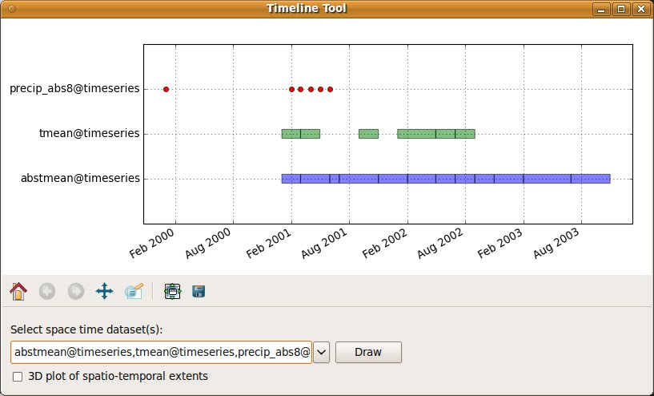

DESCRIPTION
The Timeline Tool is a wxGUI component
which allows the user to compare temporal datasets' extents in a plot.
It requires python plotting library Matplotlib.
Features:
- supports temporal datasets with interval/point and absolute/relative time
- 2D plot - temporal extent
- 3D plot - spatio-temporal extent (matplotlib >= 1.0.0)
- pop-up annotations with basic metadata

SEE ALSO
wxGUI
wxGUI components
AUTHOR
Anna Kratochvilova,
Czech Technical University in Prague, Czech Republic
$Date$